Kako je definiran končni avtomat? končni avtomat je definiran s petročkom:
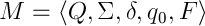
 - končna množica stanj
- končna množica stanj
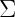 - vhodna abeceda
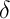 - funkcija prehodov
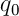 - začetno stanje
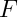 - množica končnih stanj
Kako slikajo funkcije prehodov
pri -NKA, NKA in DKA? -NKA | 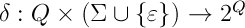
NKA | 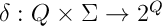
DKA | 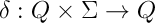
Kaj je abeceda ? abeceda je neprazna
končna množica simbolov
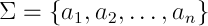
Kaj je niz oz. beseda? niz je končno zaporedje
simbolov neke abecede
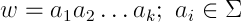
Kaj je regularna gramatika? regularna gramatika je levo ali desno
linearna gramatika, definirana kot
četvorček spremenljivk, končnih
znakov, produkcij in začetnega
simbola gramatike
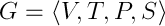
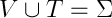 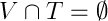
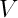 - množica spremenljivk oz. vmesnih simbolov 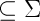
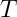 - množica znakov oz. končnih simbolov 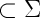
- množica produkcij
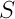 - začetni simbol 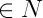
Kako predstavimo vse
nize dolžine 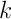 nad abecedo vse nize dolžine nad neko abecedo
izrazimo kot vse stike -tih simbolov
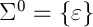
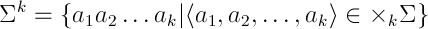
Kako predstavimo vse
nize nad abecedo vse nize nad neko abecedo izrazimo
kot unijo vseh potenc abecede
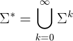
Kaj je jezik 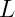? jezik je poljubna množica
nizov nad neko abecedo
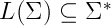
S katerimi pravili je definiran regularni izraz? regularni izraz je definiran
z naslednjimi pravili:
regularni izrazi , in 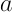
opisujejo jezike , 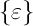 in 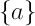
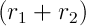 opisuje jezik 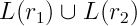
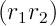 opisuje jezik 
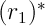 opisuje jezik 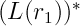
Kaj je relacija izpeljave pri prepisovalnem sistemu? relacija izpeljave je relacija, ki
preslika nek niz v drug niz z uporabo
produkcije iz prepisovalnega sistema
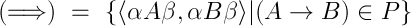
Kaj je regularni jezik? regularni jezik je tak, ki
ga lahko opišemo z regularnim
izrazom, končnim avtomatom, ...
Kako opišemo jezike avtomatov
-NKA, NKA in DKA? jezike avtomatov opišemo s
tistimi nizi, ki se začnejo s in se
končajo v stanju avtomata, ki je končno
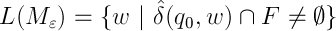
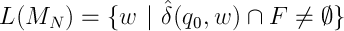
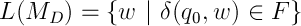
Kako pretvorimo -NKA v NKA -NKA pretvorimo v NKA tako,
da odstranimo vse povezave, ter
preverimo katere povezave moramo
dodati da dobimo spet isti jezik
Kaj je prepisovalni sistem? prepisovalni sistem je par
abecede in množice produkcij
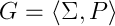
produkcija
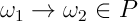
izpeljava
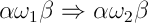
Kako poteka pretvorba KA v RI
po metodi z eliminacijo? pri metodi z eliminacijo izbiramo vozlišča, ki jih
bomo eliminirali, ter avtomat povežemo nazaj, tako,
da na nove povezave zapišemo regularne izraze,
ki opisujejo prehode, ki smo jih eliminirali,
dokler nam ne ostanta le začetno in
končno stanje, nato pa za zapis
uporabimo naslednji
regularni izraz
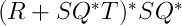
- povezava 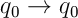
- povezava 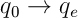
- povezava 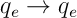
- povezava 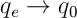
(todo slika)
Kakšen je DKA za preverjanje
deljivosti s 3 v binarnem sistemu? 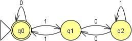
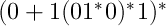
Katere operacije ohranjajo regularnost jezika? regularnost jezika ohranjajo:
unija, stik, iteracija (po def.)
presek, komplement, razlika, obrat, XOR
Kako dobimo presek dveh regularnih jezikov? presek dveh avtomatov dobimo
kot t.i. produktni avtomat

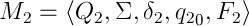
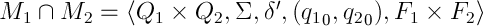
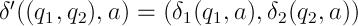
končna so tista stanja, ki
so končna v obeh avtomatih
Kako dobimo komplement regularnega jezika? komplement regularnega jezika dobimo
tako, da nekončna stanja postanejo
končna ter obratno
Kako dobimo razliko dveh regularnih jezikov? razliko dveh regularnih jezikov dobimo
tako, da razliko spremenimo v presek s
komplementom drugega jezika
in naredimo ustrezen
produktni avtomat
Kako dobimo obrat regularnega jezika? obrat regularnega jezika dobimo tako, da
končna stanja -povežemo z novim začetnim,
začetno postane končno, poleg tega pa
obrnemo še vse smeri povezav
Kako pokažemo enakost dveh regularnih jezikov? enakost dveh regularnih jezikov pokažemo
z minimizacijo | minimizacija DKA je enolična
z množicami |
Kdaj pravimo, da je kontekstno
neodvisna gramatika dvoumna? kontekstno neodvisna gramatika je
dvoumna, kadar kako izmed
besed iz jezika lahko dobimo
po več različnih izpeljavah
Kdaj pravimo, da ima kontekstno
neodvisna gramatika determinističen jezik? kontekstno neodvisna gramatika ima
determinističen jezik, kadar obstaja
nedvoumna kontekstno neodvisna
gramatika z enakim jezikom
je nedvoumna
Kako poenostavimo
kontekstno neodvisno gramatiko? kontekstno neodvisno gramatiko
poenostavimo tako, da odpravimo:
produkcije |
enotske produkcije |
nekoristne simbole | nedosegljivi in taki brez končnih
simbolov v izpeljavi
Kako minimiziramo končne avtomate? končne avtomate minimaziramo
po naslednjem postopku:
pare stanj (končno,nekončno) označimo kot neekvivalenčna
...
Kako je definiran jezik skladovnega avtomata? jezik skladovnega avtomata je definiran kot
zaporedje korakov do končnega stanja, ali pa
kot zaporedje korakov, ki izprazni sklad